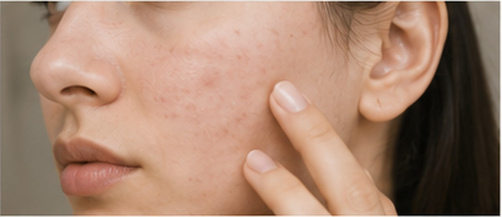
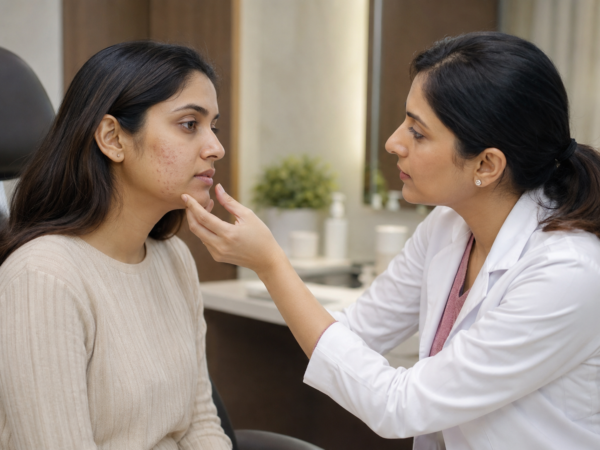

Concern 01Active acne
Inflammatory acne, whiteheads, blackheads, oiliness and recurrent breakouts need control before scar-focused procedures are planned.
Acne treatment at SRENOVA begins by understanding why breakouts are happening, how inflamed the skin is and whether marks or scars are already present. The plan may include medical therapy, peels, acne-control procedures and scar-revision options when the skin is ready.
The aim is not a quick cosmetic cover-up. It is a staged plan for fewer breakouts, healthier skin barrier function, reduced post-acne marks and gradual improvement in texture.


Concern 01Inflammatory acne, whiteheads, blackheads, oiliness and recurrent breakouts need control before scar-focused procedures are planned.
 Concern 02
Concern 02
Brown marks, red marks and uneven tone can linger after breakouts. Treatment depends on skin type, depth and sun exposure.
 Concern 03
Concern 03
Pitted scars, rolling scars and uneven texture are assessed separately because they often need collagen-supporting or release-based treatments.
Many clients come in asking for scar treatment while new acne is still active. In most cases, active acne should be stabilized first so new marks and scars do not keep forming. Once the skin is calmer, scar revision and pigmentation treatment can be planned more safely.
Your consultation looks at acne type, triggers, menstrual or hormonal pattern, skincare habits, previous medicines, picking tendency, pigmentation risk and scar depth. This helps avoid random treatments and builds a plan your skin can actually tolerate.
Different scar shapes respond to different methods, so accurate assessment is more useful than choosing a trending procedure.
May need targeted methods rather than surface-only treatment.
Can require resurfacing or collagen-supporting procedures depending on depth.
May involve tethering under the skin, so release-based options can be discussed.
Brown or red marks are not true scars and are planned differently.
The consultation should help you understand whether the priority is stopping new acne, reducing marks, improving texture or maintaining results. Each stage has different treatments, timing and aftercare.
Breakout type, severity, triggers, skincare, medicines and pigmentation risk are reviewed.
Medical therapy, routine changes and selected in-clinic options may be used to reduce flare-ups.
Once acne is stable, peels, lasers, microneedling RF, subcision or staged combinations may be considered.
Follow-up, sunscreen, acne-safe skincare and maintenance planning help reduce relapse and new marks.
Know whether the priority is acne control, marks, scars or all three.
Active acne and scars often need a course rather than a single visit.
Medical therapy has little downtime; peels, RF and lasers have procedure-specific recovery.
Sunscreen, barrier care and avoiding picking are important for marks and healing.
Acne treatment is easier to trust when the clinic explains the sequence clearly.
Usually active acne is controlled first. Scar procedures are planned once new breakouts are reduced, because ongoing acne can keep creating new marks and scars.
Scar treatment usually improves texture gradually rather than erasing every scar completely. The realistic goal depends on scar type, depth, skin type and the treatment course.
No. Brown or red post-acne marks are color changes, while scars are textural changes. They often need different treatments and timelines.
It varies. Mild acne control, pigmentation marks and deeper textural scars can require very different treatment durations. The clinic should estimate this after assessment.
Do not pick active acne. Share all medicines, allergies, pregnancy or breastfeeding status, recent procedures and strong skincare actives such as retinoids or acids before treatment.
Book a SRENOVA consultation to understand your acne type, scar pattern and the safest treatment sequence for your skin.